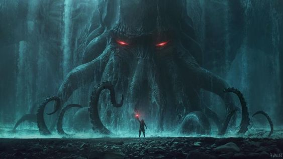

Cthulhu
Na sua casa em R’lyeh, Cthulhu morto espera sonhando.
A eles acrescentarei este meu relato -prova da minha sanidade, no qual reuni as peças de algo que, espero, nunca mais ninguém volte a decifrar. Vi tudo o que o universo pode conter de horror, e depois disso até mesmo os céus primaveris e as flores de verão serão veneno para mim. Mas não creio que minha vida será longa. Como meu tio se foi, como o pobre Johansen se foi, também eu irei. Sei demais, e o culto ainda vive.
Cthulhu também vive ainda, acredito, naquele precipício de pedra que o vem abrigando desde a infância do sol. Sua amaldiçoada cidade tornou a afundar, pois o Vigilant percorreu aquela região após a tempestade de abril; mas seus adoradores na terra ainda urram, saltam e matam ao redor de ídolos sobre monólitos em locais ermos e solitários.
Ele deve ter sido surpreendido pelo afundamento quando se achava no seu abismo negro, do contrário o mundo inteiro estaria agora berrando de pavor e frenesi. Quem sabe qual será o final? O que emergiu pode afundar, e o que afundou pode emergir. A repugnância suprema aguarda sonhando nas profundezas e a podridão paira sobre as precárias cidades dos homens. O tempo virá… mas não devo, nem posso pensar! Só me resta a esperança de que, se eu não sobreviver a este manuscrito, meus testamenteiros tenham mais precaução que audácia e impeçam que outros olhos o vejam.